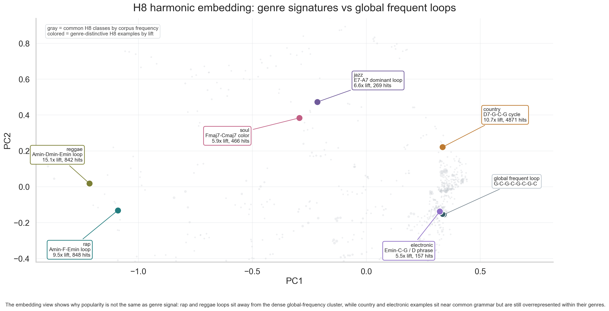
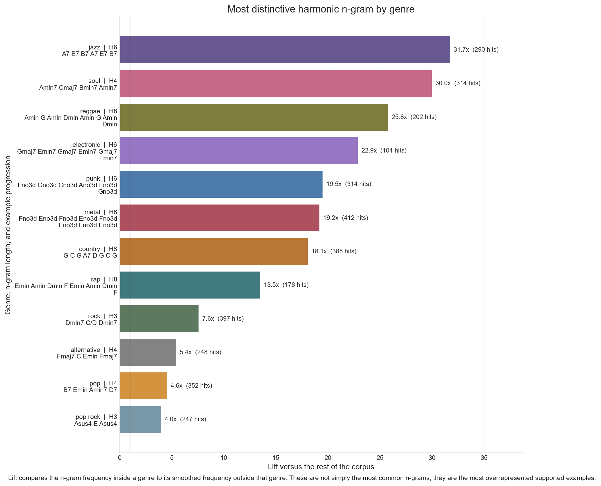

Continuation Patterns
Choose a chord phrase and compare which continuations are most common in the full collection or within a genre.
continuations
by genre
3-5 chords
Compare Continuations
Chord maps for musicians
Think of this as an experienced musician reading a large songbook and pointing out the harmonic fingerprints of a genre, a decade, or both. The dashboards turn thousands of chord sequences into a browsable analysis of harmonic vocabulary.
Chord progressions are musical vocabulary. Some phrases are everyday grammar, some point strongly toward a genre, and some become more visible in one decade than another. These tools make those patterns searchable instead of leaving them as vague listening impressions.
Hear the genre signal. Compare which chord phrases feel like shared pop grammar and which ones cluster around jazz, country, rock, rap, or another style.
Hear the decade signal. Look for phrase shapes that become unusually present in one era of the collection.
Separate familiar from characteristic. Notice which loops are everywhere and which ones carry more stylistic identity.
G D Emin C
C G Amin F
Is this ordinary vocabulary, genre color, decade color, or a little of each?
Compare short gestures like C G Amin with longer loops like C G Amin F.
Use the whole song collection, narrow to a genre, or inspect decade-colored phrases.
The charts show chord labels, counts, context, and which styles overuse a phrase.
Longer bars mean that continuation happened more often in the selected corpus slice.
Nearby dots are phrases that behave similarly in the song collection.
Like word vocabulary in a corpus study, each short chord phrase can be counted and compared across contexts.
Choose a chord phrase and compare which continuations are most common in the full collection or within a genre.

Compare which chord phrases show up unusually often in a genre or decade. Use it to spot style fingerprints.

Browse the chord-shape map from short three-chord gestures to longer eight-chord loops. Search for chords you already use.
The charts are built from a large collection of chord sequences. Similar progressions are transposed into the same starting key so musicians can compare harmonic shape instead of only exact song key.